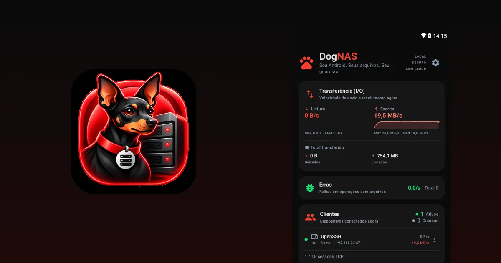
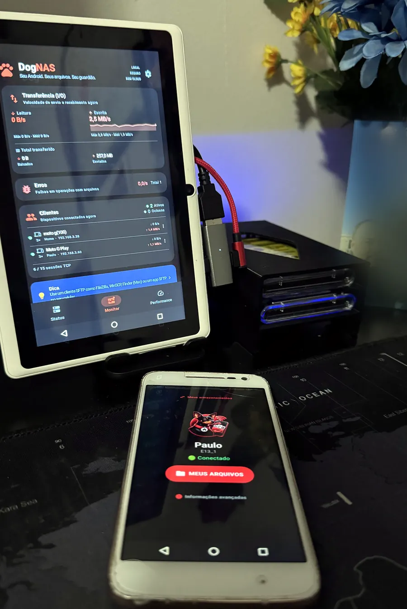

NAS caseiro sem comprar um NAS: use o Android que você já tem

Um NAS (armazenamento conectado à rede) é um pequeno servidor que guarda os seus arquivos e os entrega a qualquer aparelho da casa pelo Wi-Fi. É a ideia certa para quem cansou de pendrives, de celular sem espaço e de mensalidade de nuvem. O problema é que um NAS de prateleira, com disco, custa dinheiro e pede alguma configuração.
Se o que você precisa é guardar e acessar fotos, vídeos e documentos da família, existe um caminho mais simples: usar um celular ou tablet Android que já está sobrando.
O que um NAS faz em casa
Na prática, a maioria das pessoas usa um NAS para quatro coisas:
- guardar fotos e vídeos num lugar só, dentro de casa;
- abrir os mesmos arquivos no celular, no tablet e no computador;
- passar arquivos entre aparelhos sem cabo e sem e-mail para si mesmo;
- liberar espaço no celular sem depender de uma nuvem paga.
Para essas tarefas, um servidor de arquivos simples já basta. Você não precisa de RAID, de containers nem de um equipamento dedicado.
Três jeitos de ter um NAS caseiro
- Comprar um NAS pronto. É o mais completo: vários discos, mais recursos e suporte do fabricante. Também é o mais caro e o que mais exige configuração.
- Montar com um computador velho ou uma placa como o Raspberry Pi. Dá mais controle, mas exige instalar e manter um sistema.
- Usar um Android antigo com o DogNAS. Você instala um app, escolhe onde guardar os arquivos, toca em Iniciar e conecta os outros aparelhos por QR Code e PIN. Não precisa mexer no roteador.
Como fica com o DogNAS
O DogNAS transforma um celular ou tablet com Android 7.0 ou mais recente em um servidor de arquivos na sua rede Wi-Fi. Cada pessoa da casa tem um perfil com PIN e pastas próprias. Os arquivos ficam na memória do aparelho, num cartão SD ou num HD/pendrive USB, e trafegam cifrados (SSH/SFTP) pela sua rede, sem passar por nuvem.
No computador, você acessa com programas comuns como FileZilla, WinSCP e Cyberduck. No celular, use o DogNAS Client Lite para ver, enviar e baixar arquivos.



O que um Android não faz (e quando comprar um NAS)
Um celular não substitui um NAS completo, e vale ser honesto sobre isso:
- Não tem RAID. Cada disco é um armazenamento independente. O DogNAS não junta vários discos num único volume, e um disco pode falhar. Mantenha uma cópia independente do que é importante.
- Não roda containers nem serviços avançados. É um servidor de arquivos, não um mini data center.
- Depende do aparelho. Alguns fabricantes limitam apps em segundo plano para economizar bateria, e discos USB exigem USB OTG. Confira os requisitos antes de começar.
- Tem limites de espaço no plano Grátis: até 64 GB gerenciados. O DogNAS Pro, compra única e sem assinatura, libera o armazenamento inteiro do aparelho.
Se a sua casa tem muita gente transmitindo vídeo ao mesmo tempo, precisa de redundância de discos ou vai guardar dados insubstituíveis em um único lugar, um NAS dedicado é a escolha certa.
Para quem o Android antigo é suficiente
Para a maioria das casas, que só quer fotos, vídeos e documentos num lugar seguro, o Android que já está na gaveta resolve, sem custo extra de equipamento.
Pegue o aparelho, instale o servidor e conecte o seu celular. Em poucos minutos, você tem um NAS caseiro.